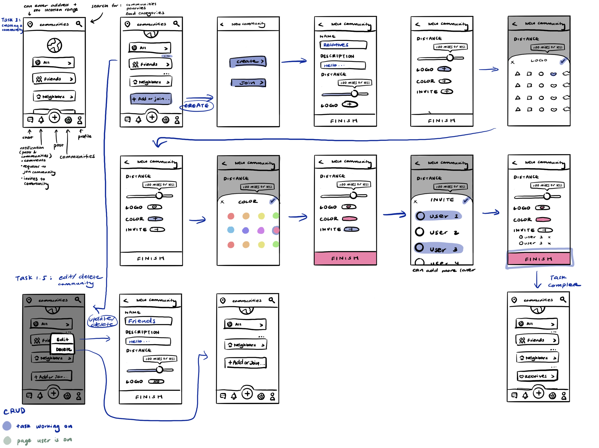
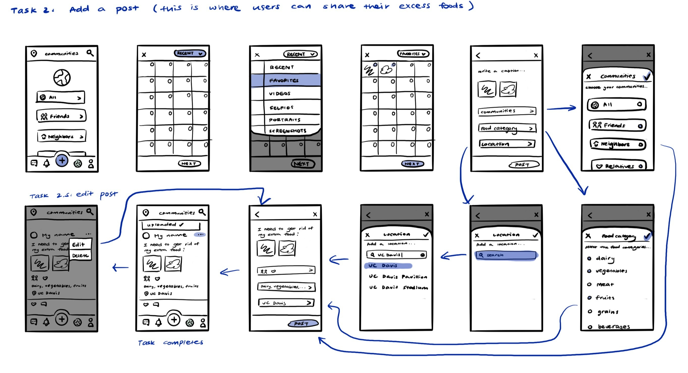
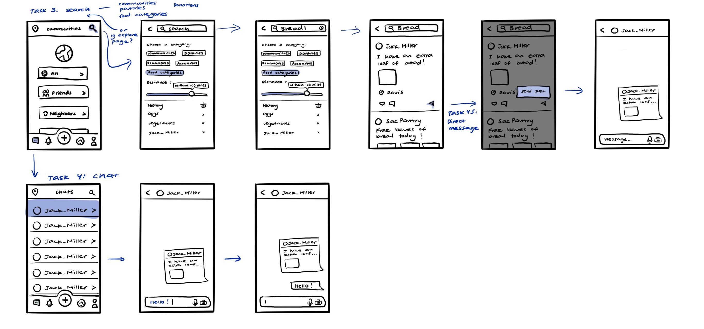

FoodTown - A UX Case Study
Timeline
- Nov-Dec 2023
Software
- Figma
My Role
- Designer
Introduction
Food insecurity is a widespread problem around the world. In the UI/UX Design: Principles and Practices course at UC Davis, I explored this problem through a mobile app design project focused on improving access to food while minimizing waste.
The goal of this project was to design a platform that enables people to share excess food or request food within their local communities, reducing waste while supporting individuals facing food insecurity.
Using user research, ideation, iterative prototyping, and usability testing, I designed FoodTown, a mobile app that combines community-based food sharing with social interaction. Users can post available food, request food, and communicate through private messaging to coordinate exchanges.
Research
Research Methods
I used various research methods to better understand user experiences related to food insecurity and food waste within local communities. I began with a preliminary literature review to establish a foundational understanding of food insecurity, food waste, and community-based food-sharing systems, drawing from academic articles.
This was followed by a survey to identify common behaviors and pain points around excess food and food access. To gain deeper insight into user motivations and concerns, I also conducted in-depth user interviews, which helped surface emotional and contextual factors such as trust, stigma, and safety.
Key Research Data and Findings
- Findings from the survey and interviews revealed several consistent themes:
- Many participants reported struggling with managing excess food, often due to over-purchasing or lack of planning.
- Giving food away was widely preferred over discarding it, provided the process was convenient and trustworthy.
- Participants experiencing food insecurity emphasized the importance of privacy and low-stigma interactions when requesting food.
- A lack of centralized, community-based platforms made food sharing feel fragmented and inefficient.
These insights informed core design decisions, including the app’s social posting structure, private messaging feature, and distance-based browsing.
Demographic Composition
- Research participants primarily consisted of adults, representing a population that may experience food insecurity or manage excess food while dealing with limited time and resources. Insights from the research were synthesized into two user personas representing:
- Individuals experiencing food insecurity seeking accessible food options
- Individuals with excess food seeking convenient ways to redistribute it
Ideation
Sketches
  Based on research findings, users were interested in convenient, low-barrier ways to share or receive food within their communities. Ideation focused on community-based posting, flexible search, and private messaging to support accessibility, trust, and low-stigma interactions. These ideas guided early sketches and feature prioritization.
Mid-fi & Testing
I conducted two rounds of usability testing with 6 participants using a mid-fidelity prototype.
- Round 1 tasks included:
- Creating a community
- Searching for food
- Messaging another user
- Round 2 repeated these tasks and added:
- Creating a post
Key Findings & Iterations
- Accessibility issues: During the first round, nearly all participants struggled to tap buttons accurately, indicating that many touch targets were too small. Participants consistently suggested enlarging buttons to improve usability.
- Iteration: Clickable icon and button sizes were increased before the second round.
- Outcome: In the second round, participants experienced significantly fewer accessibility issues, with most able to complete tasks without misclicks.
- Search behavior and filter confusion: In the first round, most participants bypassed the filter feature and went directly to the search bar. Several users found the filter confusing and were unsure whether it needed to be applied before searching. One participant suggested making filters optional rather than mandatory.
- Iteration: I made filters optional, limited them to preferred distance, and reframed the search categories as “Suggestions” to function as quick-search options
- Outcome: In the second round, participants experienced significantly less confusion during the search task. However, some users did not immediately recognize the “Suggestions” tabs as quick-search options, indicating an opportunity for clearer visual cues.
- Community creation discoverability: In the first round, participants struggled to locate the option to create a community. The prominent plus icon for creating posts drew attention away from the less visible “Add more…” label.
- Iteration: I changed the label from “Add more…” to “Create a Community” to clarify the action.
- Outcome: In the second round, participants completed the community creation task without confusion.
- Selection feedback and visual clarity: Participants in the first round were unsure whether they had successfully selected an icon when creating a community. The original feedback relied on a subtle color change that many users found difficult to notice.
- Iteration: After testing several options, I added a colored background behind the selected icon to provide clearer visual feedback while maintaining design consistency.
- Outcome: In the second round, participants clearly understood when an icon was selected.
- Participants responded positively to the consistent use of circular icons and suggested rounding the corners of rectangular elements, such as community tabs, to better align with the visual system. While users found the color palette calming and readable, several suggested increasing contrast. Participants also noted that the typography was clear and consistent, but recommended exploring stronger typographic hierarchy.
Next Step
If I were to continue developing FoodTown, I would focus on refining visual clarity, interaction design, and user safety.
From a visual design perspective, I would further explore typography by testing different typefaces, font sizes, and weight combinations to establish a clearer hierarchy and improve readability. I would also refine the color system to increase contrast while maintaining a calm, cohesive visual language.
From an interaction standpoint, I would continue iterating on the search experience, particularly the filter feature. This could include reorganizing filters with clearer iconography or visual grouping to better distinguish search functions and reduce cognitive load.
Beyond refinement, I would expand the product to support additional user tasks and edge cases. A key future consideration is user safety, especially when in-person food exchanges are involved. To address this, I would explore onboarding features such as identity verification, community guidelines, and trust signals to help reduce risk and increase user confidence.